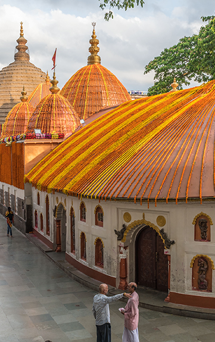
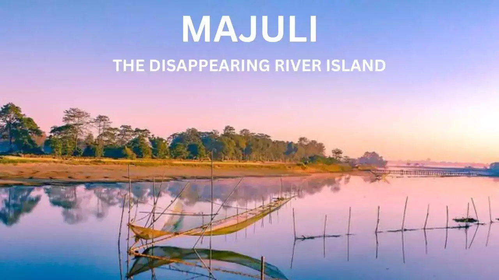
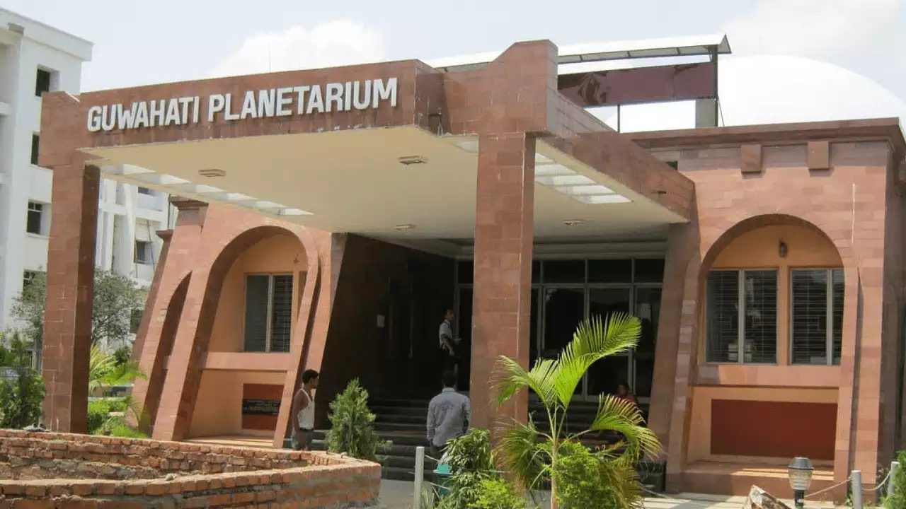
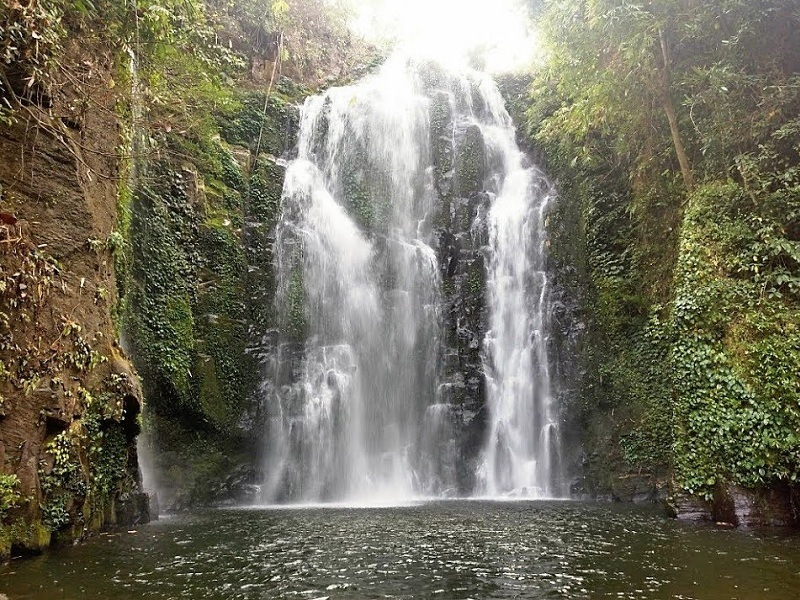
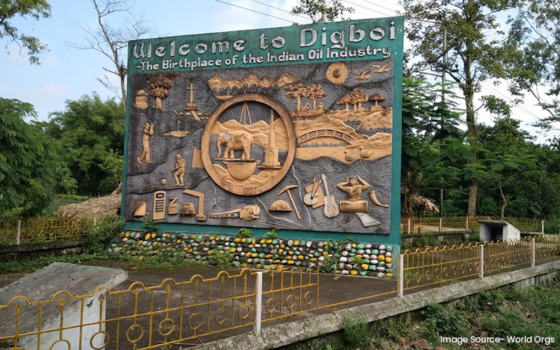

Kaziranga National Park :
Kaziranga National Park :
Home to the great Indian one-horned rhinoceros is one of the most important wildlife tourist attractions in Northeast India. Travellers across the globe flock every year to unlock the doors of diverse wildlife and scout the exquisiteness of this natural empire. The perfect topography with a river and its varied grasslands winding through its entire length, Kaziranga promises nothing but memories to cherish. This prestigious national park of India is situated in the north-eastern part of the country in the districts of Golaghat, Nagaon and Biswanath in the state of Assam. This national park was declared a World Heritage Site by UNESCO for its natural environment in 1985.

Kamakhya Temple :
Located at the Nilachal hill of Guwahati, the capital city of the state, Kamakhya temple is one of the most famous Shakti shrines in India. Kamakhya Temple is considered the most sacred and oldest of the 51 shaktipeeths on earth. It also holds a unique significance in tantric practices and is flocked by sadhus, tantrics round the year.
Kamakhya Temple is surrounded by many other temples dedicated to several deities like Bhubaneswari, Kali, Tara, Chinnamasta, Bagala, Bhairavi, Dhoomavati, Matangi and Kamala. All of them together with Kamakhya Temple are collectively known as the Dasamahavidya. Apart from the Shakti temples, the Nilachal Hill also has five Shiva Temples-Kameswar, Siddheswar, Amratokeswar, Aghor and Kautilinga.

Majuli Island :
Often called the soul of Assam, Majuli, the world’s largest river island lies at the heart of Assam and surrounded by the tumultuous water of Brahmaputra River spreading over an area of 421 sq. km. Majuli has been the cultural capital and the cradle of Assamese culture for the past five hundred years. The island has also been the hub of Assamese neo-Vaishnavite culture, initiated around 16th century by the great Assamese saint-reformer Srimanta Sankerdeva and his disciple Madhavdeva. They initiated the tradition of Satras and these Satras have preserved Sattriya dance, literature, bhaona (theatre), dance forms, mask making and boat-making. Most of the islanders belong to three tribes-Mishing,

The Guwahati planetarium :
The first and the biggest planetarium in entire Northeast India, the Guwahati Planetarium has been providing significant service in terms of inculcating scientific temperament and awareness about space and astronomy. The planetarium has state of the art projection system. It also has a virtual reality zone and astronomical gallery as well as telescopes to watch stars.
The Guwahati planetarium is an endeavour to cater to the scientific needs of the students and children. Besides daily shows, the Planetarium also regularly organises seminars, workshops and conferences for the astronomy fraternity, and exhibitions, quizzes and outdoor viewing facilities during eclipses for students and the local community.

Kakochang Waterfalls :
Located 13 km from Bokakhat of Golaghat district, this Assam’s hidden trove is a perfect weekend getaway for anyone seeking thrill and adrenaline rush. Locally called as Keipholangso, this waterfall is just a few minutes’ drive from Kaziranga National Park. As soon you reach the location, you will be in awe with the beauty of this waterfall. The crystal water that falls from the hilltop will create a pool for you to enjoy. A visit to this place will be a perfect escapade for travellers to unwind with a day of relaxation. To reach this exquisite beauty, travellers will have to trek around 4 kms from a village called Naharjan. Though the trek will be a tiring one but once you reach the waterfalls, you will forget all your tiredness and enjoy the serene beauty.

Digboi :
Digboi is situated in upper Assam in Tinsukia district which is known as the “oil city of Assam”. There are folklores that while the British were here, they used to command the labourers as “dig-boy-dig” to dig underneath for crude oil and hence the name Digboi. Tucked amid blue hills, lush green tea plantations, Digboi is also the birthplace of the oil industry in the country that dates back to the late 19th century. It is Asia’s first refinery and one of the oldest still in operation.
The history of Digboi dates back to 1867 when a few officers of the Assam Railways and Trading Company who were laying rail tracks in the deep jungles noticed that the elephants fetching logs from the forest were soaked in black mud.